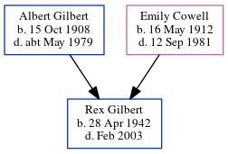

Rex Albert Frederick Gilbert 1942 - 2003
[ Home ] | [ Calendar ] | [ Surnames Index ] | [ Errors ] | [ Family History ]The older of 2 children of Albert Gilbert (a house painter) and Emily Cowell, Rex Gilbert, a cousin on the mother's side of Nigel Horne, was born in Thanet, Kent, England on 28 Apr 19421,2,3.
He died in Thanet in Feb 20033.
Parents
- Albert Edward was born on 15 Oct 1908
- Emily Edith was born on 16 May 1912
Citations
- England & Wales deaths 1837-2007 - Findmypast
- England & Wales, Birth Index: 1916-2005 Online publication - Provo, UT, USA: The Generations Network, Inc., 2008.Original data - General Register Office. England and Wales Civil Registration Indexes. London, England: General Register Office. © Crown copyright. Published by permission of the Cont
- England & Wales, Death Index: 1984-2005 Online publication - Provo, UT, USA: The Generations Network, Inc., 2007.Original data - General Register Office. England and Wales Civil Registration Indexes. London, England: General Register Office. © Crown copyright. Published by permission of the Cont
Notes
Initials were RAF because his father was in the R.A.F.
Media
England & Wales births 1837-2006 - BMD/B/1942/2/AZ/000459/125
England & Wales deaths 1837-2007 - BMD/D/2003/2/84760933
Family Tree
Map
Generated by ged2site. Last updated on Jul 3, 2024